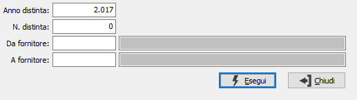

Stampa documenti
Il programma effettua la stampa degli avvisi di avvenuta disposizione di pagamento da inoltrare ai fornitori.

ANNO DISTINTA: È l'esercizio della distinta specificata come input successivo; ovviamente non si può confermare a vuoto su questo campo.
NUMERO DISTINTA: È il numero della distinta che si vuole stampare; viene proposto il numero dell'ultima distinta. Questo numero unitamente all'anno vengono memorizzati sulle scadenze stampate in modalità definitiva sulla distinta.
DA FORNITORE: eventuale codice del fornitore da cui si desidera iniziare la stampa. Confermando a vuoto, la stampa inizia dal primo fornitore presene in distinta. Sul campo è attiva la ricerca a video F9.
A FORNITORE : eventuale codice del fornitore con cui si desidera concludere la stampa. Confermando a vuoto, la stampa inizia dall’ultimo fornitore presene in distinta. Sul campo è attiva la ricerca a video F9.